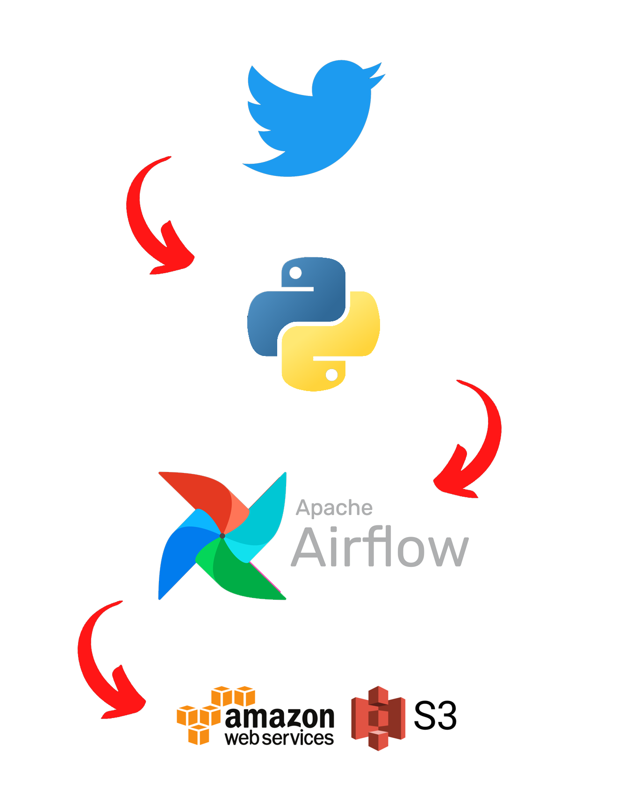

Student Feedback System
Spearheaded the conceptualization and development of a web application, resulting in a remarkable 35% enhancement in faculty-student communication and the advancement of the overall academic experience. Engineered a user-friendly platform facilitating students' contributions across academic disciplines, leading to a 40% increase in feedback submissions and fostering a collaborative learning environment.

Twitter data pipeline
Orchestrated the design and development of a cutting-edge data pipeline. Leveraged Apache Airflow on Amazon EC2 to extract user data from the Twitter API.Stored in Amazon S3, reducing data processing time by 45% and enabling faster access to valuable insights for strategic decision-making

Data Pipeline for YouTube analysis
Modernized the development and deployment of a scalable infrastructure utilizing AWS Glue, Spark, and Data Lake, resulting in a 40% reduction in data processing time and improved data quality. Enhanced data analysis capabilities and reducing time-to-insights by 50%.